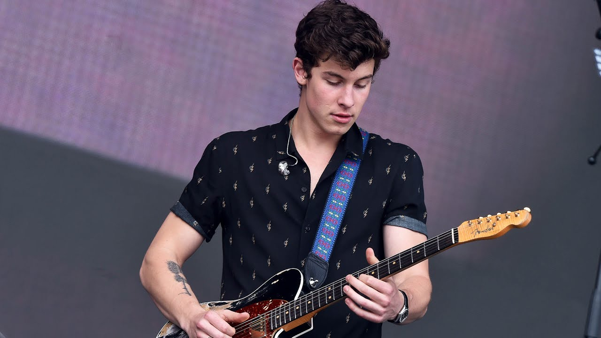

Winning Best Artist, Shawn took home an MTV Award on Sunday night. His hit tunes "Mercy" and "There's Nothing Holdin' Me Back" have dominated the charts this year, and has been the youngest artist to win more than 5 awards in less than two year. Thanks to Top Artists, his music has been listened to and streamed on Spotify over 3.5 billion times. Congratulations Shawn!
Shawn playing guitar at BBC Music Fest.
Shawn's short yet incredible speech had fans going crazy. He said, "I would like to first off thank my family for supporting me constantly, my friends and of course all you beautiful fans. Your unending support and love has helped me become who I am, and this award goes out to all of you. Thank you!" Shawn is well known for his charisma, character, love for his fans, and realness. His music leaves people with a true sense as to who he is as a person. He claims his inspirations are Ed Sheeran and John Mayer. We're beyond proud of you Shawn!
Authors
Sarah Smithson
Began working: 5 June 2016
Editor for Top Artists
Joe Leon
Began Working: 4 August 2016
Editor for Top Artist as well as co-founder